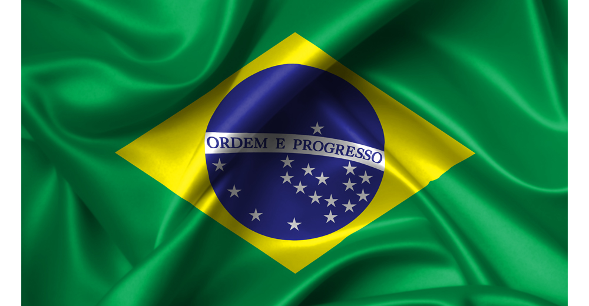
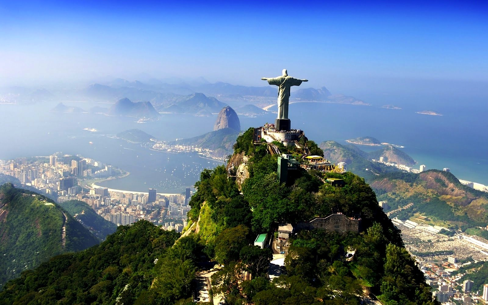
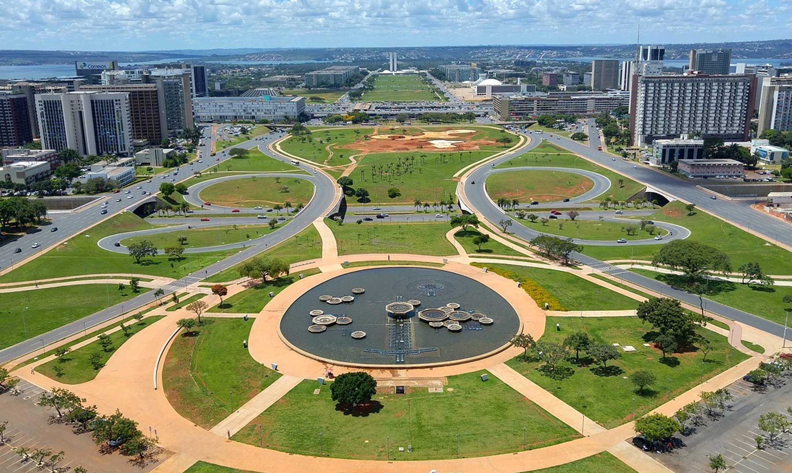
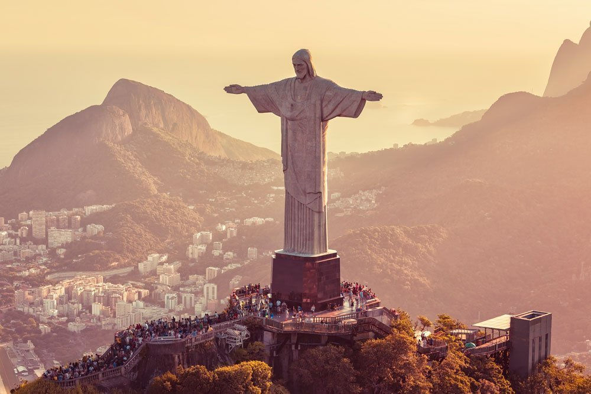
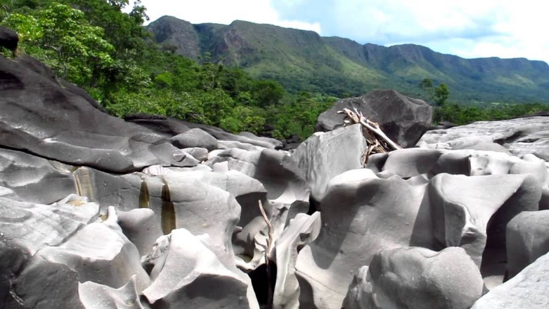
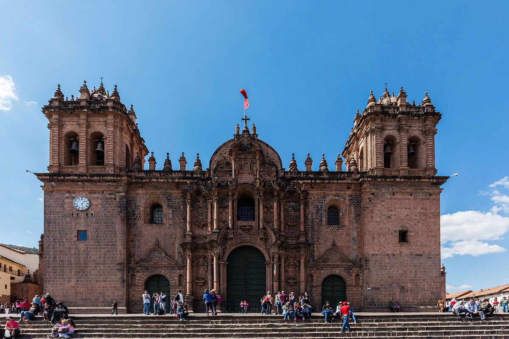
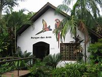
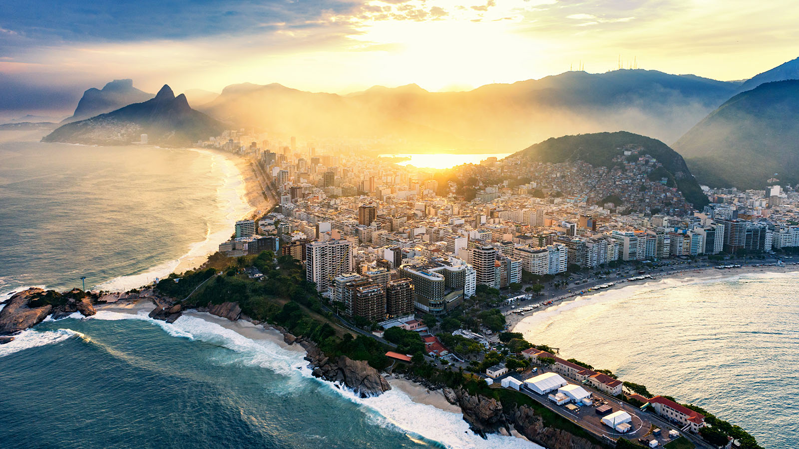
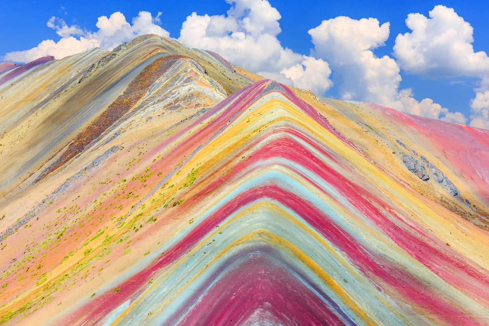

PAN DE AZUCAR
CRISTO REDENTOR
VALLE DE LA LUNA
CATEDRAL DEL CUZCO
PARQUE DE LAS AVES

BANDERA DE BRASIL:La bandera de Brasil está formada por un rectángulo verde de proporción 7:10. Sobre este rectángulo, aparece un rombo amarillo, y dentro de este, un círculo azul con una banda blanca que contiene el lema "ORDEM E PROGRESSO" («Orden y Progreso» en portugués) en color verde, así como 27 estrellas de color blanco. |
 | |||||
|  | Brasil, oficialmente la República Federativa de Brasil es un país soberano de América del Sur que comprende la mitad oriental del subcontinente y algunos grupos de pequeñas islas en el océano Atlántico. Con una superficie estimada en más de 8,5 millones de km², es el quinto país más grande del mundo en área total (equivalente a 47 % del territorio sudamericano).12 Delimitado por el océano Atlántico al este, Brasil tiene una línea costera de 7491 km. Al norte limita con el departamento ultramarino francés de la Guayana Francesa, Surinam, Guyana y Venezuela; al noroeste con Colombia; al oeste con Perú y Bolivia; al suroeste con Paraguay y Argentina, y al sur con Uruguay. De este modo tiene frontera con todos los países de América del Sur, excepto Ecuador y Chile. La mayor parte del país está comprendido entre los trópicos terrestres, por lo que las estaciones climáticas no se sienten de una manera radical en gran parte de su territorio. La selva amazónica cubre 3,6 millones de km² del territorio. Gracias a su vegetación y al clima, es uno de los países con más especies de animales en el mundo.> | |||||
| PIB: 1,363 billones USD (2020) | Población: 211 millones (2019) | Código telefónico: 55 | Área: 8,516 millones km² (3,288 millones millas cuadradas) | Presidente: Jair Bolsonaro | Capital: Brasilia | |
|  | Brasilia es la capital federal de Brasil y la sede de gobierno del Distrito Federal, localizada en la región Centro-Oeste del país. Tiene una población de 3 015 268 habs. según estimaciones de 2019 del Instituto Brasileño de Geografía y Estadística, lo que la convierte en la tercera ciudad del país por población, además tiene una población de 4 284 676 en la zona metropolitana. Es sede del gobierno federal, conformado por los tres poderes de la República.> |
5 CURIOSIDADES DE BRASILIA:
|
LAGO DE PARANOA |
ALGUNAS ESPECIES DE ANIMALES DE BRASIL |
ESPECIES DE ANIMALES QUE HABITAN EN BRASIL:Brasil es el país que tiene la mayor biodiversidad en Flora y fauna del planeta, Esa gran variedad de animales, plantas, microorganismos y ecosistemas, muchos únicos en todo el mundo, se debe, entre otros factores, a la extensión territorial y a los diversos climas del país. Brasil cuenta con el mayor número de especies conocidas de mamíferos y de peces de agua dulce, el segundo de anfibios, el tercero de aves y el cuarto de reptiles. Con más de 50 mil especies de árboles y arbustos, tiene el primer lugar en biodiversidad vegetal. Ningún otro país tiene registrado tantas variedades de orquídeas y palmeras catalogadas. Los números impresionan, pero, según estimativas aceptadas por el Ministerio del Medio Ambiente el MMA, ellos pueden representar solo el 10% de la vida en el país. Como varias regiones todavía son muy poco estudiadas por los científicos, los números de la biodiversidad brasileña crecen a medida en aumenta el conocimiento. Durante una expedición de solo 20 días por el Pantanal, coordenada por la ONG Conservation International (CI) y divulgada en 2001, fueron identificadas 36 nuevas especies de peces, dos de anfibios, dos de crustáceos y cerca de 400 plantas cuya presencia en aquel bioma era desconocida por la ciencia. El levantamiento nacional de peces de agua dulce coordenado por la Universidad de São Paulo (USP), publicado en 2004, indica la existencia de 2.122 especies, 10% a 15% de ellas desconocidas hasta hora. El animal emblemático de Brasil es el Armadillo de tres bandas elegido para representar a Brasil en el mundial de Brasil en el año de 2014. |
| LUGARES TURISTICOS DE BRASIL | |||
PAN DE AZUCAR |
CRISTO REDENTOR |
VALLE DE LA LUNA |
CATEDRAL DEL CUZCO |
PARQUE DE LAS AVES |
CATARATAS DEL IGUAZU |
RIO DE JANEIRO |
VINICUNCA |